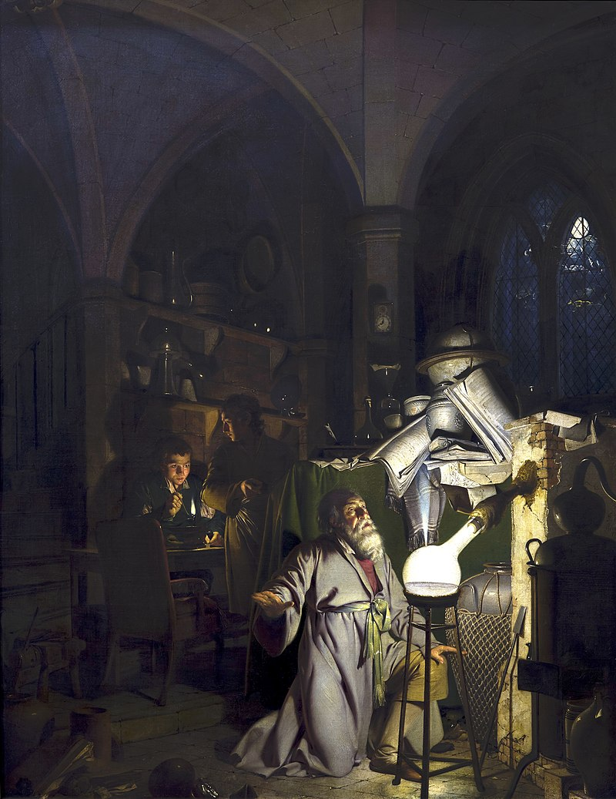

The Philosopher's Stone Quiz

The philosopher's stone, more properly philosophers' stone or stone of the philosophers (Arabic: ḥajar al-falāsifa, Latin: lapis philosophorum), is a mythical alchemical substance capable of turning base metals such as mercury into gold (chrysopoeia, from the Greek χρυσός khrusos, "gold", and ποιεῖν poiēin, "to make") or silver. It is also called the elixir of life, useful for rejuvenation and for achieving immortality; for many centuries, it was the most sought goal in alchemy. The philosophers' stone was the central symbol of the mystical terminology of alchemy, symbolizing perfection at its finest, enlightenment, and heavenly bliss. Efforts to discover the philosophers' stone were known as the Magnum Opus ("Great Work").
The most commonly mentioned properties are the ability to transmute base metals into gold or silver, and the ability to heal all forms of illness and prolong the life of any person who consumes a small part of the philosopher's stone diluted in wine. Other mentioned properties include: creation of perpetually burning lamps, transmutation of common crystals into precious stones and diamonds, reviving of dead plants, creation of flexible or malleable glass, or the creation of a clone or homunculus.